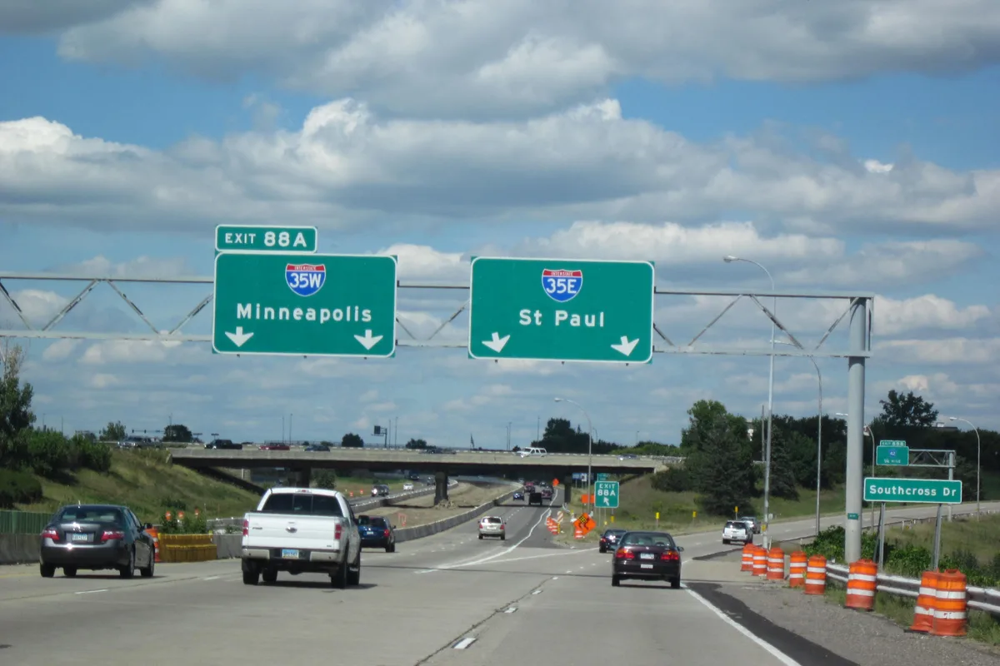
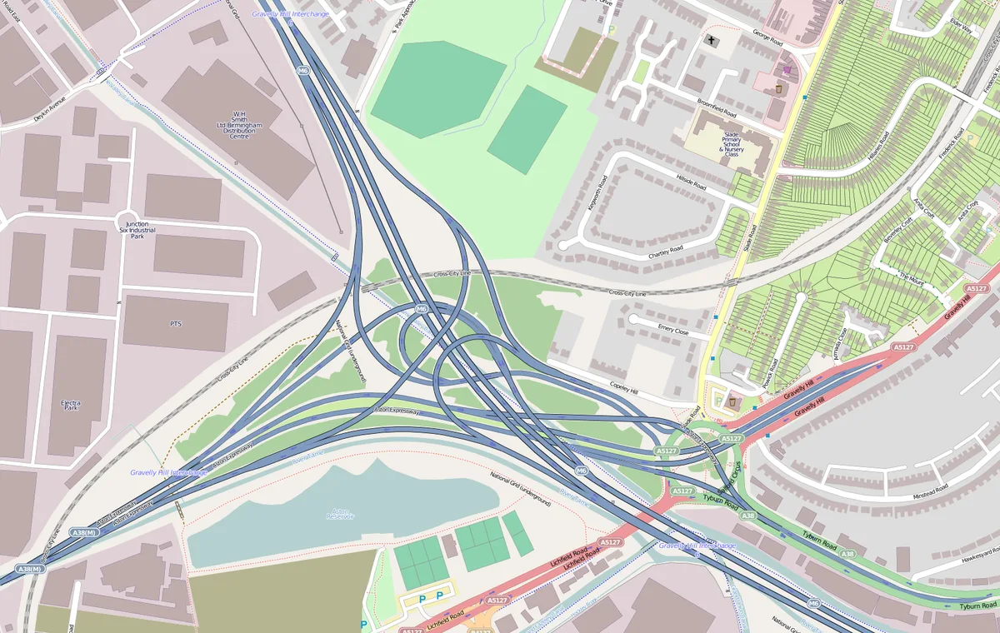

Strong guidance
A clear voice prompt paired with a simplified two-dimensional junction diagram, lane markings and direction arrow.
Voice + visual
Machine-learning product · Scenario optimisation
I initiated a bounded machine-learning use case that replaced fragile rules with labelled data, behavioural signals and product responses matched to model confidence.
The problem
At multi-way, consecutive and visually similar junctions, a single wrong choice can mean a detour of tens of kilometres, especially on motorways. These junctions represented only 2-3% of the network, yet their off-route rate ran about one and a half times that of ordinary junctions, and they were a recurring theme in user feedback.
The existing solution relied on serial if/else rules built from map geometry. Each new patch increased interaction between rules, making the system difficult to maintain and unable to recognise the full variety of real-world junctions.

Illustrative photo. Doug Kerr, CC BY-SA 2.0.
Rule patches evaluated one after another. A useful new rule could be excluded by earlier logic, with little visibility into why.
Use machine learning only for this well-bounded scenario, where humans could label ground truth and the product could absorb uncertainty.

Map © OpenStreetMap contributors.
Data strategy
I defined a broad candidate pool from three sources: rule mining, trajectory mining and real user feedback. From that pool, across ten priority cities, the team manually labelled over 20,000 real junctions as ground truth and split them into separate training and evaluation sets.
Clear labelling rules, double annotation and human checks kept the labels consistent. Because the pool mixed rule-derived candidates with trajectory and user-reported ones, the evaluation set contained junctions the rules themselves could never have expressed.
How the dataset was built
Core product decision
Precision and recall moved in opposite directions. Instead of treating the model output as a binary answer, I defined four product responses based on confidence and the user cost of being wrong.
The trade-off, mapped onto product behaviour
A clear voice prompt paired with a simplified two-dimensional junction diagram, lane markings and direction arrow.
A voice prompt identifies the type of complex junction and asks the driver to slow down and observe.
A non-directive message notes an easy-to-miss junction. Even a false positive feels plausible rather than disruptive.
No additional prompt is shown. The normal navigation experience continues without unnecessary interruption.
Evaluation and rollout
The team checked more than 5,000 mined junctions by hand, completed 100+ field tests with the guidance experience and ran a two-month A/B test. Rollout expanded city by city from 1% to 100%, while monitoring off-route behaviour, detours and user feedback.
The final release covered 15+ leading cities and millions of users.
What I contributed
I originated the project, defined the labelling policy, contributed feature hypotheses, set confidence thresholds through field testing and led the staged rollout. Algorithm, data, client and QA partners built and validated the solution with me.
Machine learning was appropriate because the problem had a bounded scenario, labelable ground truth and a measurable user outcome. Product judgement mattered most when model performance stalled: connecting features back to driver behaviour, city context and physical road conditions revealed signals that abstract map data missed. The same scenario-based method was later extended to metro and indoor positioning.